POCKET FIELD GUIDE
Use actual photographs to distinguish Arundo donax, Phragmites australis and Zizaniopsis miliacea without guessing from a fluffy seedhead.
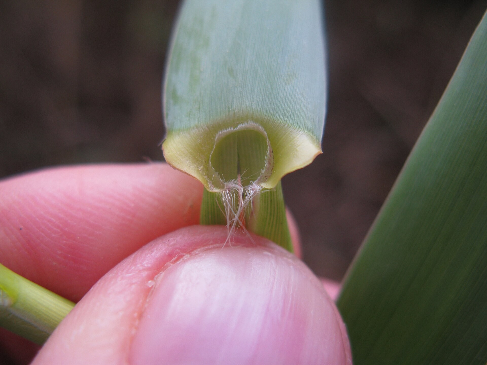
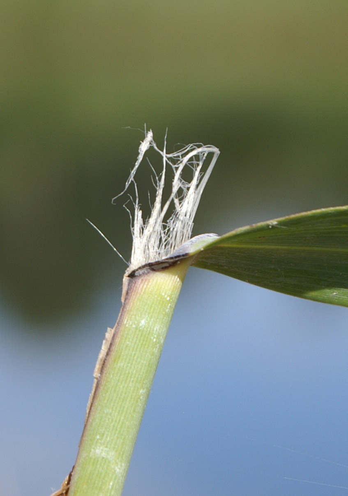
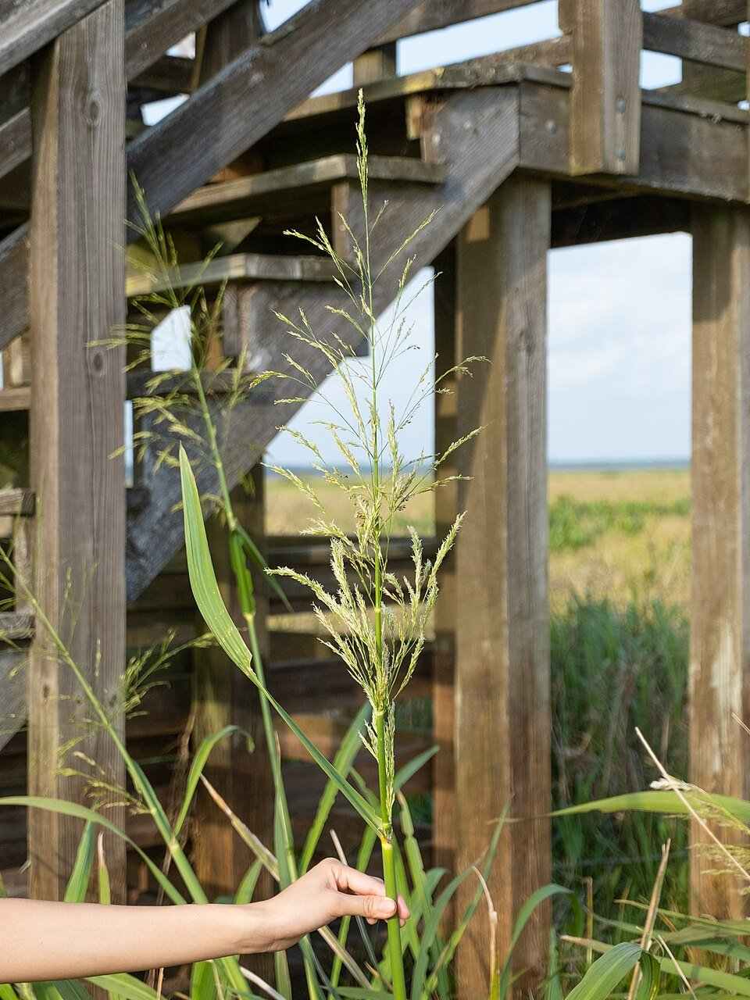
For crew use: this is a learning and identification guide, not a stand-alone authorization for invasive-species removal.
01 · START FROM A DISTANCE
Broad leaves and thick cane-like stems? Check Arundo first (p. 4). Its blade base often makes obvious flaring lobes around the stem.
Silky, very feathery terminal plume? Check Phragmites (p. 5). Hair position in a mature spikelet helps confirm it.
Loose, open head with distinct branching portions? Check Zizaniopsis (p. 6). Its exceptionally long papery inner ligule is a strong clue.
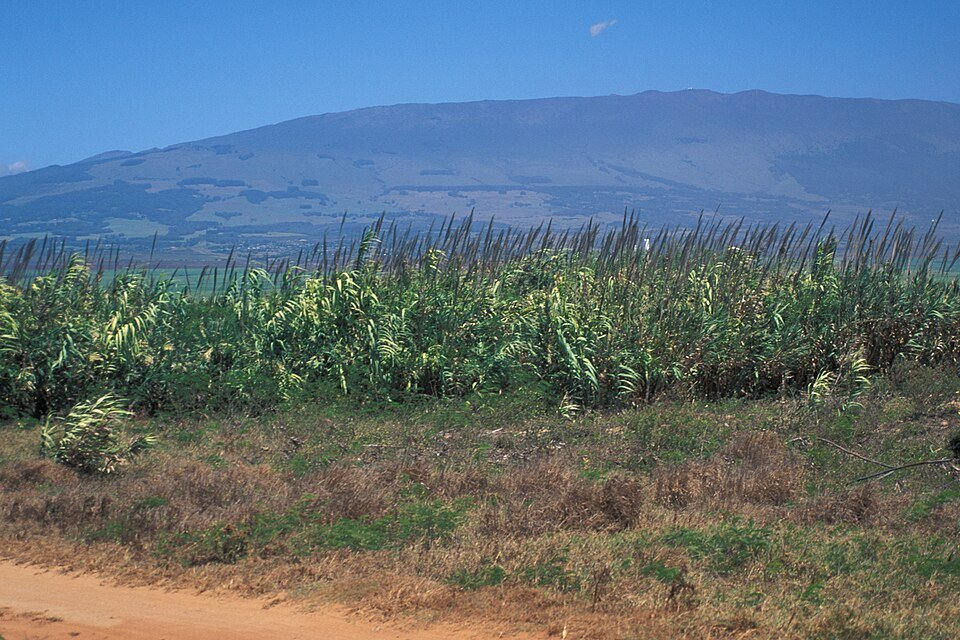
Height, water level, plume color, stand density and season vary. None alone provides a reliable ID.
02 · THE MOST USEFUL PLACE TO LOOK
Follow a leaf blade down to the sheath that wraps around the stem. Gently open the leaf base: the ligule is inside where the blade meets the sheath. Do not confuse a lower node with a ligule.
Both Arundo and Phragmites may have hairlike fringes near their collars. Hair presence alone is NOT the deciding characteristic.
03 · SPECIES PROFILE
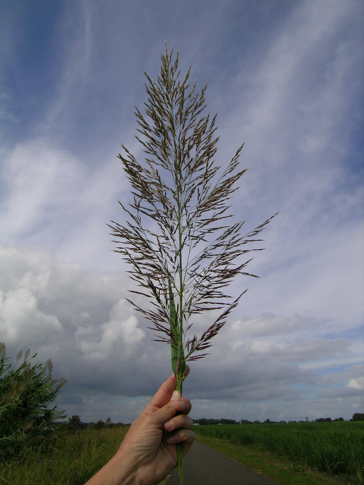
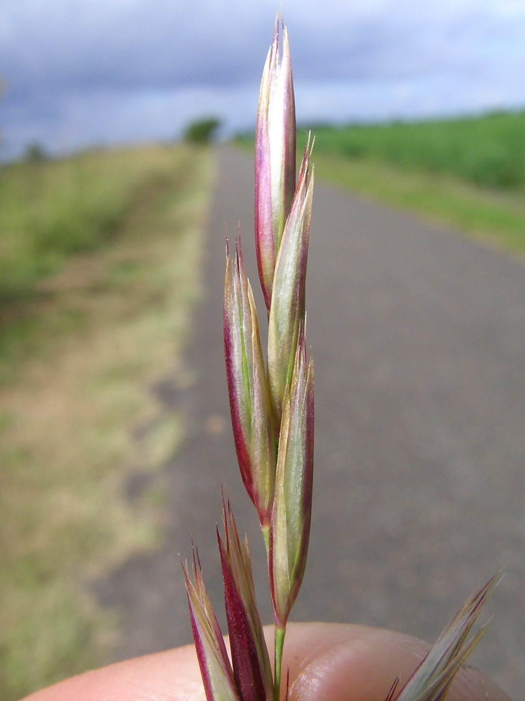
Arundo is introduced in Texas. The guide photos are from other localities and do not prove where a Texas colony occurs.
04 · SPECIES PROFILE
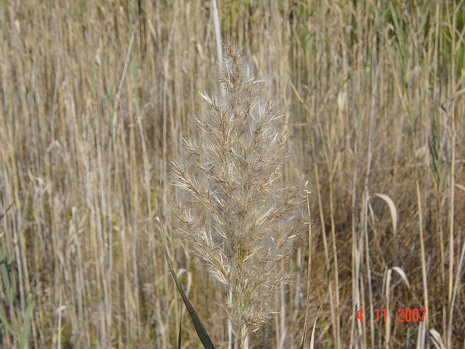
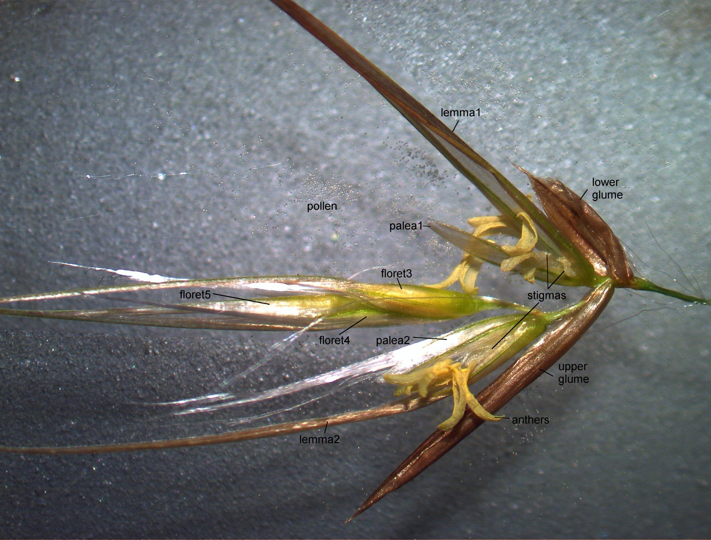
Species is NOT lineage: native North American, introduced Eurasian and Gulf Coast lineages have been described. Never decide invasive status from these photos.
05 · SPECIES PROFILE
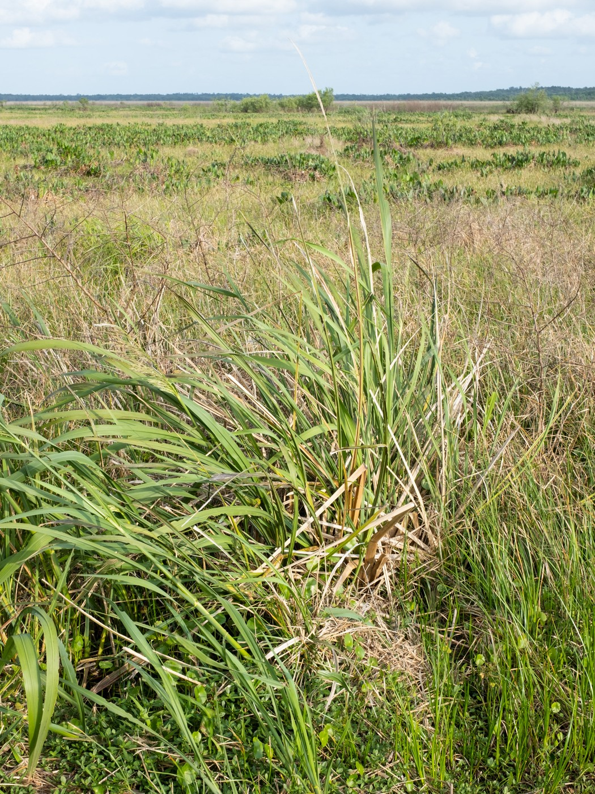
Our archived sheath photo (next page) does not expose that long ligule. You need a new opened-collar photo to confirm this clue.
06 · PHOTO COMPARISON
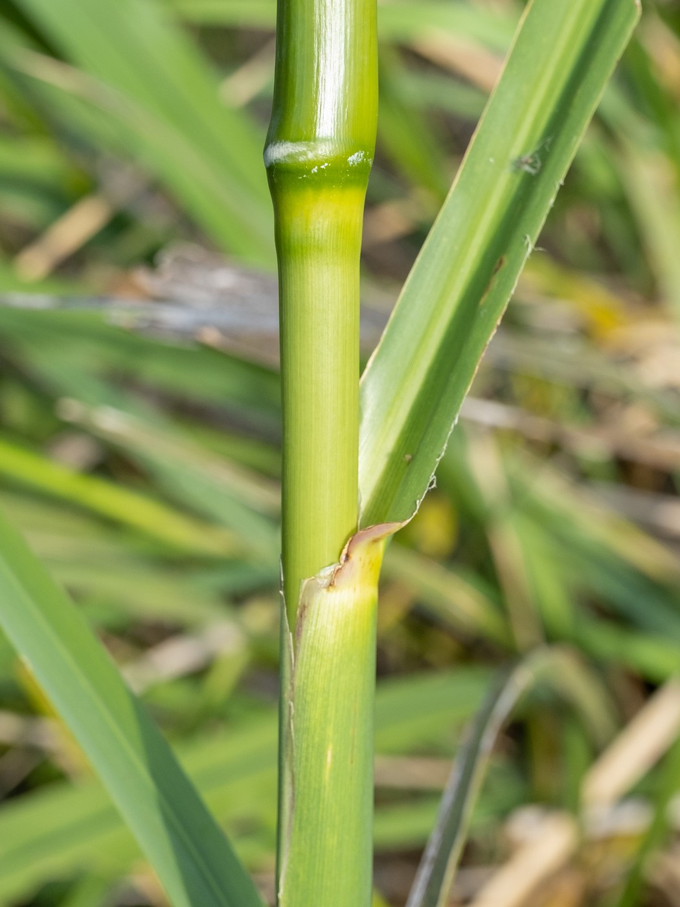
What the third photo does not show: Zizaniopsis' long inner ligule. Never arrow a structure that cannot actually be seen.
Your next move: trace the blade down, peel back just the leaf base, put ruler beside the inner junction, and photograph it sharply.
07 · HAND-LENS CHALLENGE
Arundo: lower lemma hairy; axis between flowers (rachilla) hairless.
Phragmites: long silky hairs attached along the rachilla between flowers.
This is an excellent microscope-level distinction, but these exact two photos are not a complete paired close-up of hair attachments. Use them to locate the spikelets, not to claim a hair attachment you cannot see.
08 · PHRAGMITES LINEAGES
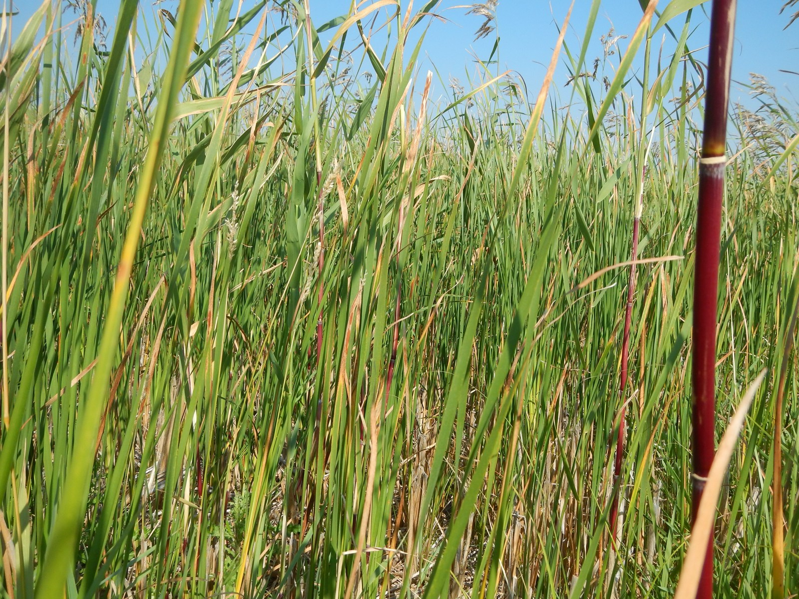
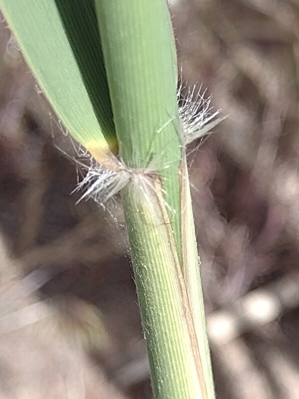
| Look at | Often native americanus | Often introduced australis |
|---|---|---|
| Old sheath | Peels away more readily | Persists longer |
| Exposed stem | Smooth, glossy, often reddish | Duller, often ridged/tan |
| Ligule* | ~1.0–1.7 mm | ~0.4–0.9 mm |
*USDA reference ranges. Measure several middle-stem ligules and glumes; use a combination of 3–4 traits. The Gulf Coast berlandieri lineage complicates this split in Texas.
If uncertain, record “Phragmites australis — lineage unresolved.” Do not order control solely from this page.
09 · EVERY TIME YOU FIND A REED
Bring: 10× hand lens, phone macro lens, little ruler, notebook and gloves. Leave sensitive habitat undisturbed; do not pull a whole plant when photos will do.
10 · BACK-POCKET REFERENCE
| Clue | Arundo | Phragmites | Zizaniopsis |
|---|---|---|---|
| Head | Big branching plume | Silky, feathery | Very open branches |
| Leaf base | Strong clasping lobes | Less strongly lobed | Look for serrulate margins |
| True ligule | Short; may be fringed | Short/fringed | Very long papery 6–20 mm |
| Floret | Hairy lemma; naked rachilla | Silky rachilla | Male & female units |
| Management | Introduced | Confirm lineage | Native broadly; verify local plant |
Best ID = at least TWO independent real structures, preferably collar + reproductive detail. No flowers? Record a tentative ID, not forced certainty.
These example photos are not authenticated Hays County specimens. Nativity for particular counties should be checked separately in BONAP/NAPA.
11 · REFERENCES & PHOTO CREDITS
Glossary: blade = flat part of leaf; sheath = wrap around stem; ligule = membrane/fringe inside leaf base; panicle = branched flowering head; spikelet = grass flowering unit; rachilla = little axis between florets; lemma = outer floret bract.
Every photograph is individually source-credited below; click the creator to open the exact photo source and the license to read reuse terms. Images are reduced to fit the booklet. Photo labels are not evidence of Hays County occurrence or lineage.
Save a PDF while online via the “Print / Save PDF” control at the top of this guide. The exported PDF includes the loaded photographs for offline field use.
Glass Root Garden · Educational field guide, first edition · October 27, 2026.
_(2).jpg){kind=link}


_(2).jpg){kind=link}
_(2).jpg){kind=link}


.jpg){kind=link}